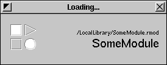

Modules
Resound is designed to load special modules when it runs. These modules are located inside Resound's .app wrapper, the Resound subdirectory of your Home's Library directory, /Local/Library/Resound or /Network/Library/Resound. Resound modules have the .rmod extension, and look like this:
When Resound loads modules, it displays the following window in the upper-right-hand corner of the screen:


 ...where SomeModule is the name of the currently loading module.
...where SomeModule is the name of the currently loading module.
Modules can modify or generate sounds, change hardware parameters, run outside programs, or do practically anything a standard program can do.
Modules reside in the Modules Menu: 
Resound comes with an API for developing modules. Press here for more information on module development: